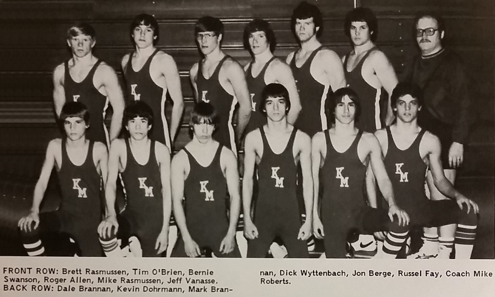

Season
1977-78
6-6Dual record
76Wrestlers
Michael RobertsHead coach

Roster
| Wt | Wrestler | Grade | Record | State |
|---|---|---|---|---|
| Nov. | 22nd Pine Island | W | 27-18 | |
| Nov. | 30th Lake City | W | 27-19 | |
| Dec. | 8th Cannon Falls | L | 25-22 | |
| Dec. | 13th Byron | W | 41-17 | |
| Dec. | 16th Zumbrota | W | 50-9 | |
| Jan. | 1st Hayfield | L | 26-23 | |
| Jan. | 6th Kenyon | L | 36-11 | |
| Jan. | 13th St. Charles | L | 27-12 | |
| Jan. | 14th Stewartville | L | 27-26 | |
| Jan. | 17th Dodge Center | L | 27-26 | |
| Jan. | 20th Wabasha-Kellogg | W | 26-19 | |
| Jan. | 27th Plainview | W | 32-24 | |
| 98# | Brett Rasmusson | 7th | 6-9 | |
| 105# | Matt Bradford | 11th | 1-5 | |
| 105# | Scott Rendler | 7th | 0-2 | |
| 105# | Tim O'Brien | 10th | 0-2 | |
| 112# | Bernie Swanson | 11th | 15-5 | |
| 112# | Tom Rasmusson | 9th | 0-2 | |
| 112# | Alex Zelinski | 9th | 4-6 | |
| 119# | Roger Allen | 10th | 14-6 | |
| 126# | Mike Rasmusson | 11th | 14-9 | |
| 132# | Jeff Vanasse | 12th | 12-7 | |
| 138# | Dale Brannan | 10th | 4-7 | |
| 145# | Marlin Madery | 11th | 9-7 | |
| 145# | Jeff Berge | 11th | 2-1 | |
| 155# | Mark Brannan | 12th | 15-8 | |
| 167# | Dick Wyttenbach | 12th | 8-10 | |
| 185# | Jon Berge | 12th | 15-6 | |
| 285# | Russ Fay | 12th | 15-9 | |
| 98# | Brett Rasmusson | 7th | 4-8 | |
| 105# | Matt Bradford | 11th | 1-5 | |
| 105# | Scott Rendler | 7th | 0-2 | |
| 105# | Tim O'Brien | 10th | 0-2 | |
| 112# | Bernie Swanson | 11th | 9-3 | |
| 112# | Alex Zelinski | 9th | 4-6 | |
| 112# | Tom Rasmusson | 9th | 0-2 | |
| 119# | Roger Allen | 10th | 6-3 | |
| 126# | Mike Rasmusson | 11th | 6-4 | |
| 132# | Jeff Vanasse | 12th | 7-5 | |
| 138# | Dale Brannan | 10th | 2-5 | |
| 145# | Marlin Madery | 11th | 5-4 | |
| 145# | Jeff Berge | 11th | 2-1 | |
| 155# | Mark Brannan | 12th | 6-5 | |
| 167# | Dick Wyttenbach | 12th | 4-6 | |
| 185# | Jon Berge | 12th | 7-3 | |
| 285# | Russ Fay | 12th | 7-4 | |
| 98# | Brett Rasmusson | 7th | 2-1 | |
| 112# | Bernie Swanson | 11th | 3-0 | |
| 119# | Roger Allen | 10th | 2-1 | |
| 126# | Mike Rasmusson | 11th | 2-2 | |
| 132# | Jeff Vanasse | 12th | 2-1 | |
| 145# | Marlin Madery | 11th | 2-1 | |
| 155# | Mark Brannan | 12th | 3-1 | |
| 167# | Dick Wyttenbach | 12th | 2-2 | |
| 185# | Jon Berge | 12th | 3-0 | |
| 285# | Russ Fay | 12th | 2-2 | |
| 112# | Bernie Swanson | 11th | 3-2 | |
| 119# | Roger Allen | 10th | 2-1 | |
| 126# | Mike Rasmusson | 11th | 3-1 | |
| 132# | Jeff Vanasse | 12th | 3-1 | |
| 138# | Dale Brannan | 10th | 2-2 | |
| 145# | Marlin Madery | 11th | 2-2 | |
| 155# | Mark Brannan | 12th | 3-0 | |
| 167# | Dick Wyttenbach | 12th | 2-2 | |
| 185# | Jon Berge | 12th | 2-1 | |
| 285# | Russ Fay | 12th | 2-1 | |
| 119# | Roger Allen | 10th | 3-0 | |
| 126# | Mike Rasmusson | 11th | 3-1 | |
| 155# | Mark Brannan | 12th | 2-1 | |
| 185# | Jon Berge | 12th | 2-1 | |
| 285# | Russ Fay | 12th | 3-1 | |
| 119# | Roger Allen | 10th | 1-1 | |
| 126# | Mike Rasmusson | 11th | 0-1 | |
| 155# | Mark Brannan | 12th | 1-1 | |
| 185# | Jon Berge | 12th | 1-1 | |
| 285# | Russ Fay | 12th | 1-1 |
Team Results
6-6 · Click to expand
- Nov. 22ndPine IslandW27-18
- Nov. 30thLake CityW27-19
- Dec. 8thCannon FallsL25-22
- Dec. 13thByronW41-17
- Dec. 16thZumbrotaW50-9
- Jan. 1stHayfieldL26-23
- Jan. 6thKenyonL36-11
- Jan. 13thSt. CharlesL27-12
- Jan. 14thStewartvilleL27-26
- Jan. 17thDodge CenterL27-26
- Jan. 20thWabasha-KelloggW26-19
- Jan. 27thPlainviewW32-24
Head coachMichael Roberts